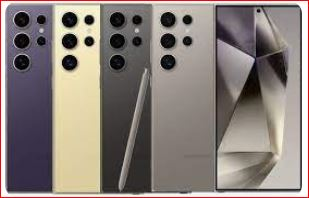

Samsung Galaxy S24 Ultra
REVIEWS:
1. Design and Display: The Samsung Galaxy S series is known for its premium design and high-quality
displays. The Galaxy S24 Ultra is expected to feature a sleek design with a large, vibrant display,
possibly with improvements in resolution, refresh rate, and overall screen quality.
2.Camera: Samsung typically focuses on camera improvements with each new Galaxy S release. The
Galaxy S24 Ultra may feature advanced camera technology, including multiple rear camera lenses
with high megapixel counts, improved low-light performance, and enhanced software features for
photography and videography.
3.Performance: Samsung's flagship smartphones usually come equipped
with powerful processors and ample RAM, providing smooth performance for multitasking, gaming,
and productivity tasks. The Galaxy S24 Ultra is likely to feature the latest processor
technology, offering improved speed and efficiency compared to previous models.
4.Battery Life: Battery life is an important consideration for smartphone users. Samsung may
introduce battery optimizations and possibly an increased battery capacity in the Galaxy S24
Ultra to ensure all-day usage on a single charge.
5.Connectivity and Features: Expect the Galaxy S24 Ultra to support the latest connectivity standards
, including 5G connectivity, Wi-Fi 6E, and possibly new features such as improved biometric security
options or expanded wireless charging capabilities.
6.Software: The Galaxy S24 Ultra is expected to run Samsung's One UI software based on the latest
version of Android, with additional features and optimizations tailored to Samsung's devices.
7.Price: Flagship smartphones like the Galaxy S series tend to come with premium price tags. The
Galaxy S24 Ultra is likely to be priced accordingly, reflecting its high-end features and
capabilities.
Pros:
The new display glass offers an improved viewing experience, and the display itself is plenty bright.
Tougher materials and build all around, the titanium frame is nice to the touch, the target audience will likely appreciate the return to a flat screen.
Battery life is towards the top of the class; charging is faster than Pixels or iPhones.
The S Pen is just as unique a proposition in 2024 as it has been for years.
Exciting One UI with plenty of AI, DeX support, and great connectivity options.
Camera system as versatile as ever thanks to an even more useful telephoto and overall improved processing.
Cons:
The display has flaws which may be obscure or fixable along the way but mar the overall impression.
Charging speed is still behind the curve; the phone is picky about adapters, and the bundled cable is 3A only.
Illogical image quality disparity between 10x and slightly lower zoom levels.